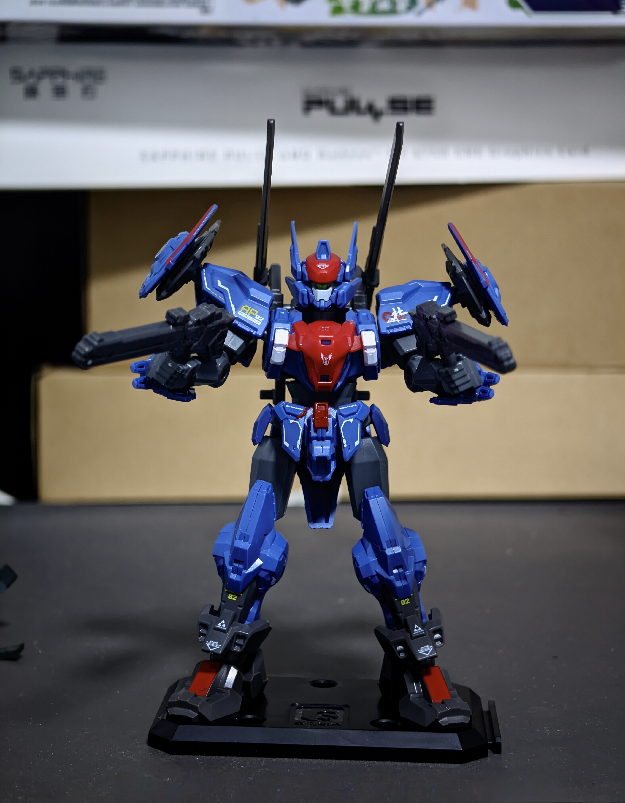
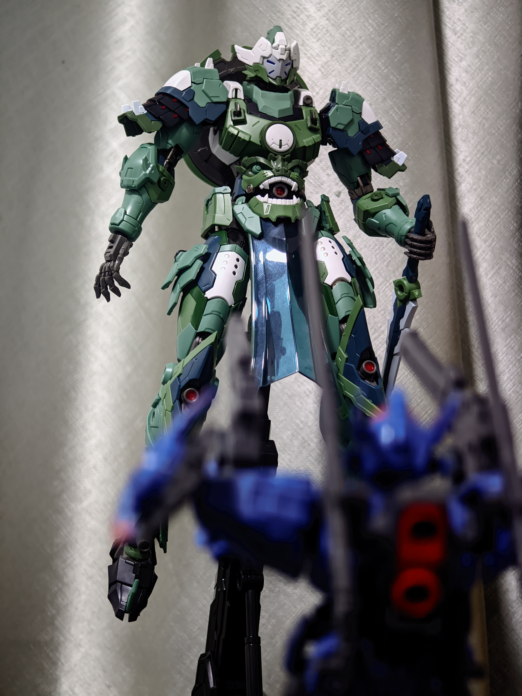

# 入冬
明明温度都差不多，但每次这个时节出差回来，都觉得变得好冷，可能是下了点雨的缘故。入冬了，不用开空调，电费也省了些👍。
# 模型


这次出差回来终于把武城侯拼好了。虽然不会摆姿势，但还是好帅😎😍。
# 关于自我感动
Tim 在今年的工作流分享视频中提到了一个 “自我感动” 的观点，这是他的原话：
现在拍东西我觉得很重要的一个点就是，怎么样让别人第一眼觉得你的画面跟别人不一样，单纯追求清晰度真的会有个很明显的上限，那换句人话来说，就是我们得确保我们投入的精力和钱是各位能看到的，我觉得你做视频也许也应该吸取这一点，千万千万剔除掉自我感动，这是我着两年变化最多的一点。
“自我感动” 在生活中常常被用在男女情感里。一个微小的善意，一句礼貌的夸赞，一次无意的身体接触，都能被赋予深刻意义，就像站在情感的聚光灯下，时刻用放大的感受审视她的每一个细节。独自陶醉，情入深处，便开始 “在吗” 起手，接一记 “擅自期待”，对方格挡甚至技能全空也无碍，三千雷动拉开身位，释放天阶斗技《自我安慰》，待蓝条回满冷却结束后再次 “为爱冲锋”，如此精彩绝伦的独角戏还是没有感动对方，内心重创大败而归后，便又开始感叹自己的坚韧无私，义无反顾，如无人能懂的宝藏，为自己的 “无怨无悔” 动情不已，打造爱而不得的苦情人设，痛呼天欲绝人。做到这种程度，其实已经成功脱离独角戏走入对方的戏剧中，只不过这个为你量身打造的角色是个戴红色鼻子的小丑。
再次原谅我的抽象，可能最近农玩多了，身体里沉睡的野兽总会情不自禁地觉醒。我觉得 Tim 是在说，内容输出者不要做太多无用功，你自认为付出了很多精力和巧思的东西，有时候很大程度上得不到其他人的共鸣，导致时间、精力和财力物力的浪费，甚至降低创作热情，内容创作若是脱离输出对象的感官体验和需求导向，沦为自恋的幻梦，不顾及外界的目光与心灵的呼唤，纵有千般才情，亦如空谷幽兰，全心投入的作品远不如预期的影响力，创作激情必然会逐渐消散，最终受害者还是自己。
我记得小学时候曾写过一篇作文叫《母亲的脸》，说到我每次看到妈妈坚毅的脸，都能联想到为国奋战的民族英雄。如今看来这种无厘头的描写实属尴尬无比，可我那时真的觉得写得很好，好到快把自己感动哭了。这种心理或许也是一种 “自我感动”，只不过还多了几分年少的 “中二”。
这周还听了《黑神话：悟空》音乐总监在机核的访谈，他谈到一件事情。黑神话当时把《戒网》当作预告片的宣传曲，游戏发布后，大家都认为第四章结尾的章节动画 BGM 应该就是《戒网》，但其实他还留了一首《勿听》，希望能给玩家带来惊喜感。通过在游戏中埋下一点小惊喜小彩蛋，哪怕大多数玩家没有感觉到，哪怕一切都是一种创作者的脑补，但这种潜意识的期待对他来讲却是一种提升创作热情的方式，他会自己玩的很开心。“做游戏做啥不就做这些东西嘛”。这也是一种 “自我感动” 嘛？但它确实给创作者带来乐趣和激情了。
这样看来，是否 “自我感动” 跟输出对象的反应密切相关么？作品能与读者产生共鸣，说明输出内容具有普适价值，能够在情感、观点等层面与大众进行有效连接，这显然不能称作 “自我感动”；但反之，缺乏大众共鸣的作品就是内容创作者在 “自我感动” 了吗，会不会是由于大众本身的认知局限、审美差异，使得艺术极高的作品无法得到及时认可，比如梵高的画作。这种也不能归结于 “自我感动” 吧。
越说我自己越糊涂了。唉，那我写这些博客是否也是在 “自我感动” 呢？
不管了，自己宋就好了。
# 输出
-
一篇不太合格的技术博客。
输出一篇行云流水、通俗易懂的技术博客是个难题。我觉得极客公众号（你管这破玩意叫网络）就做的很好，生动形象的动画加上通俗易懂的描述，总能把难以捉摸的概念解释得清晰明白
-
农常碰到逆天队友，已无力再战，天不容我，我就开溜
# 其他碎片
再听听黑神话的音乐，博客目前没有在线音乐功能，有时间升级一下
- 《戒网》
- 《往生咒》
- 《陕北说书》
很喜欢的一节播客，很多有趣的知识和观点
- 读书时间！一起读《软技能：代码之外的生存指南》
众所周知，网民在互联网是裸奔的。一些本就不该联网的应用总是喜欢把用户数据上传到自己的服务器上。我在自己的电脑上加了出网认证，任何程序出网都需要用户同意，虽麻烦一点，但可以避免一些不必要的泄露事件。但即便如此，有些 “流氓” 还是防不胜防
- 想不到剪贴板居然是裸奔的
：跟自己比惨，跟别人比惨
- 你用什么来提醒自己一切没有那么糟糕？